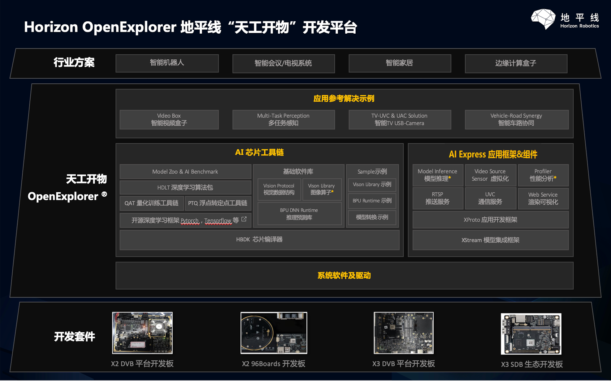
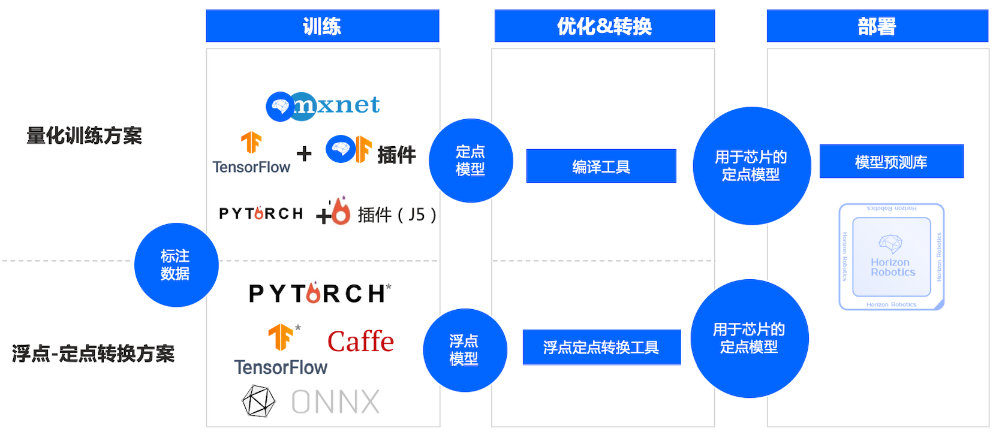
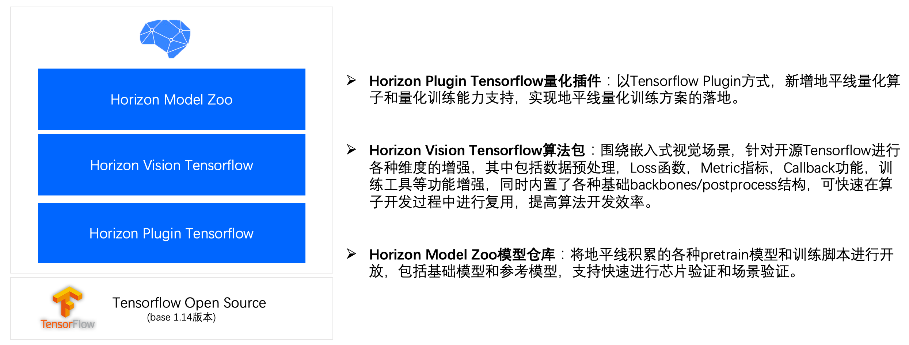
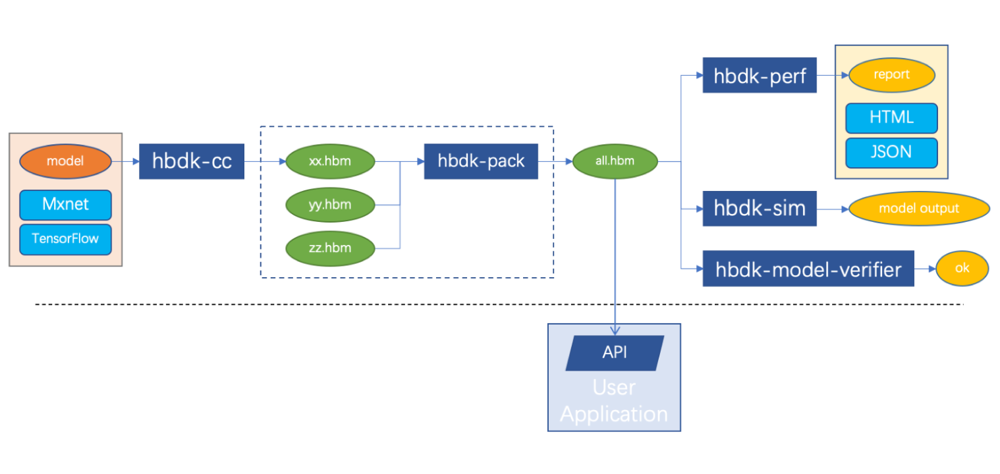
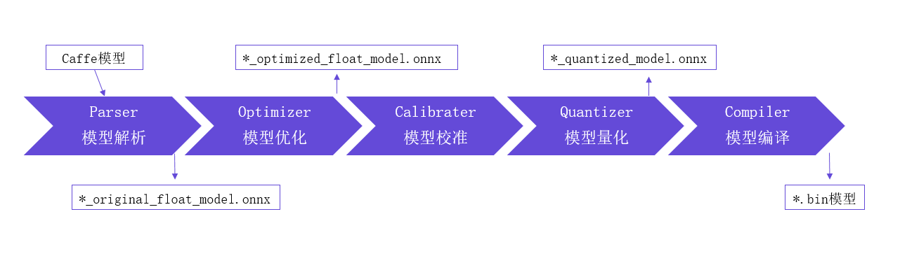
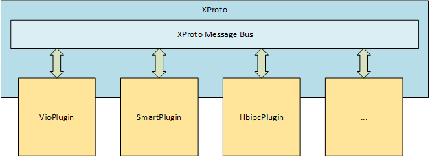

开发平台概述¶
地平线芯片开发平台产品产品名称为OpenExplorer天工开物 开发平台，它是地平线自研的芯片配套基础AI应用开发平台。
它由基础系统软件及驱动、AI芯片工具链、AI Express应用开发组件&框架以及应用参考解决示例四个部分组成。
1. 基础系统软件¶
XJ3 芯片的系统为 嵌入式Linux ，针对芯片内部的各个硬件，系统软件层面提供了相应的API供您去使用，其中主要包括以下内容：
图像通路：包括MIPI，ISP，IPU等各个图像通路模块的API函数列表以及H264/265/JPEG编解码模块的API函数列表。
ION内存操作：内存操作相关函数。
BPU硬件相关：查询BPU AI加速器的状态。
其他：包括GPIO，USB等外设的操作API函数以及Linux系统相关API函数。
除了API函数以外，系统软件层面也提供了一些工具集用于查询查询和调整系统OS层面相关配置。关于系统软件相关功能使用，请参考对应的产品手册。
2. AI芯片工具链¶
AI芯片工具链，又称AI Toolchain，它重点是解决如何在地平线芯片上完成深度神经网络模型的训练、转换以及模型部署问题。
地平线AI芯片工具链核心采用了模型量化技术来实现深度神经网络模型的计算加速。
Note
深度神经网络模型量化属于一种深度神经网络的性能优化技术，它通过降低权重和激活值的精度来减小存储&计算量，进而实现芯片级别的计算加速。 非量化场景下，模型权重和激活值都为Float 32bit，通过量化为16bit，8bit，4bit，可以成倍的减小计算量。
常见有16bit，8bit，4bit等量化方案，目前地平线XJ2/XJ3采用8bit量化方案。
地平线量化工具链主要包括两套：量化训练工具链 和 浮点转定点工具链，分别对应社区的QAT（Quantification Aware Training）量化感知训练和PTQ（Post-Training Quantization）后量化转换，如下所示：
{kind=link}
2.1 量化训练方案¶
量化训练方案即量化感知训练方案，支持在模型训练过程中，直接训练出量化模型。地平线量化训练方案是基于社区训练框架的基础上进行开发。 XJ3芯片支持Mxnet Gluon，Tensorflow两套框架，J5芯片支持Pytorch框架，预计2021年下半年也会针对XJ3芯片支持Pytorch框架。
针对每种框架，我们采用量化Plugin插件+Vision算法包+ModelZoo模型仓库的组合方案进行产品交付。以Tensorflow量化训练工具链为例：
{kind=link}
Horizon Plugin Tensorflow量化插件：以Tensorflow Plugin方式，新增量化算子和量化训练能力支持。
Horizon Vision Tensorflow算法包：围绕嵌入式视觉场景，针对开源Tensorflow进行各种维度的增强，其中包括数据预处理，Loss函数，Metric指标，Callback功能，训练工具等功能增强， 内置了各种基础backboones/postprocess结构，可快速在算子开发过程中进行复用，提高算法开发效率。 同时我们在算法包中内置地平线优势的模型，基于这些优势模型，用户基于私有数据可以快速训练自己出自己的产品化模型。
Horzion Model Zoo模型仓库：将地平线积累的各种pretrain模型和训练脚本进行开放，包括基础模型和参考模型。
经过量化训练工具链生成的模型还仅仅是量化模型，比如tensorflow量化训练工具训练后生成的是 PB格式 量化模型，在部署到地平线芯片之前，需要使用 HBDK芯片编译器工具链 对模型进行编译，
将PB格式模型转换为指令集模型(文件后缀名为.hbm)。
HBDK芯片编译器工具链是一套命令行工具集合，其中以hbdk-cc编译器为主，支持将量化训练的定点模型，编译成HBM指令集文件，进而可以在地平线AI芯片中进行部署。 同时提供了hbdk-pack模型打包工具链支持将多个HBM指令集文件进行打包，简化上板部署。另外围绕模型静态评测，模型X86仿真评估以及模型一致性验证工具，提供了hbdk-perf,hbdk-sim和hbdk-model-verfier工具集。
{kind=link}
hbdk-cc：将模型（MXNet/TensorFlow）编译成模型库文件（.hbm）。hbdk-pack：将一个或多个模型库文件（.hbm）打包成一个模型库文件（.hbm）。hbdk-perf：评估模型库文件（.hbm）中的模型在X3/J3上运行的性能，生成性能分析报告。hbdk-model-verifier：验证模型库中的模型，确保在X3/J3上运行结果的正确性。hbdk-sim：运行模型库中的模型，得到预测结果。hbdk-model-check：按照指定BPU架构标准去检查算法模型是否满足要求。
Note
量化训练方案可以贴合地平线芯片的优势，构建出更加符合地平线芯片的量化模型，进而可以获取到更高的模型性能和量化精度。 但是对算法人员的模型设计以及模型量化训练都是有一定侵入性，具有一定的学习和上手成本
因此我们暂时默认不对外发布量化训练工具链，如果你有相关需求，可以联系我们销售和技术支持获取。
2.2 浮点转定点工具链¶
浮点转定点工具链即后量化转换方案，通过工具方式将原始浮点模型，利用少量校准数据集对模型做量化校准，并编译生成为可以在地平线芯片上运行的指令级模型。
使用流程如下：
{kind=link}
如上图所示，地平线模型量化转换方案不仅仅是传统概念上模型参数的Quantization定点化流程， 而是一个完整模型解析，模型结构优化，模型定点化，以及模型指令编译与优化过程，最后交付的是一个可以直接在地平线芯片上部署的异构混合模型。
浮点转换原生支持Caffe和ONNX模型，其中ONNX支持到最新的opset10，11，其他Pytorch，Tensorflow等框架都可以通过转换为ONNX模型来使用我们转换工具链。
与量化感知训练方案相比，浮点转定点方案使用起来更加简单，算子支持范围更完整，针对典型模型，量化工具可以很好的保持量化精度，因此优先推荐你使用浮点转换工具链。 但是如果您尝试了浮点转换工具链提供的各种量化精度技术手段都无法满足你的量化精度需求时，你可以尝试用量化训练方案进行解决。
Note
浮点转定点工具链生成物是异构混合模型bin文件，与量化训练方案中最后的定点模型hbm文件有概念上的差异。
其中HBM文件内部指令为在地平线BPU AI加速器进行计算，而BIN文件内部除了可以包含多个HBM段以外，还有一些会在CPU上执行的模型算子 比如Abs，Clip，Div，Elu，Exp等算子，它们会在CPU上按照FP32方式进行计算。
浮点转换工具链也是通过支持CPU算子和BPU算子的方式来提高模型适配能力，提升工具链的易用性。
3. AI Express应用开发组件&框架¶
AI Express应用开发组件&框架，主要面向嵌入式应用系统开发人员，通过提供应用开发框架，应用开发组件以及应用示例来引导开发者快速、高效的完成AI应用开发。
AI Express应用开发组件&框架主要包括如下类型组件：
简易化的模型集成 ：在AI芯片工具链的
BPU DNN Runtime 推理预测库基础上，新增了XStream 模型集成框架和Model Inference 模型推理两个功能组件来显著提高嵌入式模型集成效率。简化图像数据输入 ：针对MIPI和USB类型Sensor数据流以及RTSP被文件回灌数据流两种场景提供Video Source虚拟化实现，开发者使用简单接口可以快速拉取原始图像数据。
基于消息总线的嵌入式应用开发模式 ：在边缘AI场景下，AI应用常见表现为消息驱动的工作模式，从Sensor的视频输入，视频编解码，图像预处理，图像拼接，AI处理以及渲染传输， 我们为开发者提供了
XProto应用开发框架来简化应用程序开发，它提供了标准化的消息总线，并支持进程内，跨进程以及跨芯片的数据PUB/SUB能力。数据推送和可视化 ：除了XProto提供的PUB/SUB能力之外，我们还提供了RTSP推送服务，UVC通信服务以及Web Service渲染可视化能力，满足各种场景下数据推送和可视化的需求。
3.1 模型集成¶
从AI算法工具链拿到指令级算法模型(hbm/bin模型)到最终产品化算法SDK交付过程中，会面临非常各种技术难点，比如性能问题，复用问题，可扩展性问题等。
针对这些难点，我们提供了 BPU DNN Runtime 推理预测库, XStream算法 SDK 集成框架, Model-Inference模型集成组件 等组件来解决，
这些组件的针对不同技术问题提供对应的解决方案，从而更高效支持您在地平线芯片上完成算法模型的集成。
Note
- 嵌入式模型集成面临的技术难点：
可用性问题：
需要提供嵌入式模型预测库，在AI芯片上完成模型加载、预测推理等
需要支持在X86环境下对模型推理的流程进行功能仿真验证。
性能问题：
单模型预测Pipeline包括模型前处理，模型推理，模型后处理，此时需要考虑Pipeline的并行和并发问题。
多模型多路推理场景，需要考虑模型间的调度有序性高效性。
模型，策略的并行化对底层多线程框架有较大的性能挑战，其中包括线程并发数，线程复用，线程优先级等。
复用问题：
模型预测Pipeline支持沉淀为标准模块，并支持在多个应用场景下复用。
单个策略模块(比如跟踪策略，抓拍策略等)以标准化组件形成进行沉淀，并支持在多个应用场景下复用。
由多个模型和策略组合起来的workflow模型业务流，支持在多个应用场景下复用。
可扩展性问题：
多模型Workflow需要支持灵活的策略、模型扩展能力，满足业务场景持续升级的需求。
易用性问题
如何快速完成模型预测Pipeline的开发？如何更快的贴近地平线芯片视频通路完成模型推理输入输出链路的构建？
针对这些问题，我们通过 BPU DNN Runtime 推理预测库, XStream算法 SDK 集成框架, Model-Inference模型集成组件 三个组件来解决：
BPU DNN Runtime 推理预测库 ：提供API接口支持在地平线AI芯片上完成模型加载，预测等基础功能，主要解决上述的可用性问题。
XStream算法 SDK 集成框架 ：定位多线程框架，支持以标准化组件的方式来实现模型和策略的高效集成和模块沉淀，主要解决上述的性能问题，复用问题以及可扩展性问题。
Model-Inference模型集成组件 ：是基于XStream算法 SDK 集成框架之上，解决如何快速完成模型在Pipeline上的集成，如何解决多个模型调度有序性高效性，聚焦在易用性和性能问题上.
关于相关组件的使用，请参考对应的开发手册进行使用。
3.2 消息总线¶
在边缘AI场景下，AI应用常见表现为消息驱动的工作模式，从Sensor的视频输入，视频编解码，图像预处理，图像拼接，AI处理以及渲染传输， 整个数据流表现为多个插件模块的 Pull消费消息 + Process处理消息 + Push产生新的消息 。
示意图如下所示：
在地平线AI Express应用开发组件&框架中，我们提供了XProto消息总线应用开发框架，它提供标准化的plugin应用插件开发接口，支持各个插件向总线push/pull消息。 同时XProto消息总线应用开发框架不仅仅支持单个进程内的数据流转，而且还支持多进程和跨芯片(基于以太网)的数据传输方案，为应用架构提供非常灵活的方案支持。
围绕XProto消息总线应用开发框架，我们也内置了Sensor虚拟化、数据推送和可视化等预开发应用插件，基于这些插件可以快速完成你业务逻辑的开发。
进一步关于XProto消息总线应用开发框架的使用，请参考开发手册。
3.3 Sensor虚拟化¶
在地平线AI芯片中，我们内置了丰富的图像处理硬件模块，其中视频输入Video In,视频输出Video Out,视频编解码Video CODEC以及图像编解码Image Process。 在系统软件层面，会针对每个模块提供驱动级API供用户去构建图像链路，从而获取到图像数据。
从应用开发组件角度，我提供了 VideoSource 应用开发组件，相比使用系统软件驱动级API，VideoSource提供了更加简单接口去获取数据Sensor数据，
并且支持MIPI，USB，RTSP网络数据流，文件回灌场景，支持单路和多路同步，可以非常灵活满足各种业务场景下的需求。
进一步关于VideoSource应用开发组件的使用，请参考开发手册。
3.4 数据推送和可视化¶
产品开发和验证环节，通常需要将原始图像和智能结构化数据推送到外部可视化端，从而可以进行可视化验证。
针对该场景，我们支持提供RTSP 推送服务，UVC通信服务和Web Service Display渲染组件来供你使用。
RTSP 推送服务：支持将原始视频帧或者视频帧+智能结构化数据进行统一编码，并通过RTSP协议进行推送，用户可以基于RTSP播放器可视化视频流和智能结构化数据。
UVC 通信服务：基于UVC通信信息，将X3作为USB Host将编码后的视频数据推送到USB客户端。
Web Service Display渲染组件：Web可视化组件，通过WebService协议将视频帧+结构化数据推送到web页面进行可视化。
Note
RTSP Service组件支持将原始视频帧或者视频帧+智能结构化数据进行统一编码，并通过RTSP协议进行推送，但是VLC等公开RTSP播放器默认无法渲染结构化数据，仅能可视化视频帧。
其中结构化数据采用PB格式进行序列化，我可以提供PB Schema支持用户自行反序列化和开发私有RTSP播放器，来实现视频帧+结构化数据可视化。
进一步关于数据推送和可视化的使用，请参考开发手册。
4. AI参考解决方案示例¶
围绕AIOT场景开放了多任务感知参考解决方案，智能盒子参考解决方案，TV-USB Camera参考解决方案以及智能车路协同参考解决方案。
用户可以直接基于这些方案，快速完成自己的产品开发。
Note
AI参考解决方案示例当前我们在DDK开发包中，默认只开放了多任务感知参考解决和智能盒子参考解决方案两个源码，其他示例源码如果需要请联系我们商务进行获取。